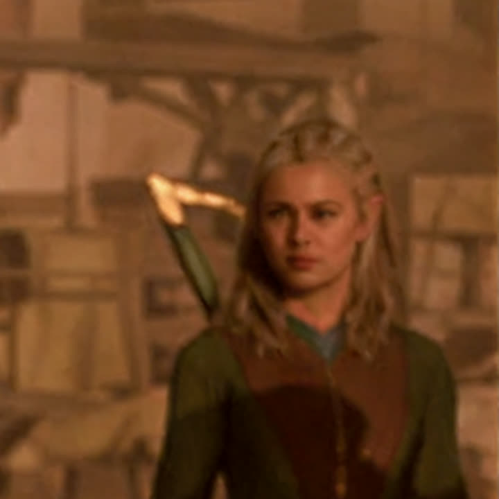

AI video enhancer · RTX GPU
Video kabur?
Jadikan HD.
Upload video, PC kami proses frame demi frame, kemudian simpan terus ke galeri. Sesuai untuk status WhatsApp yang nampak tajam.
Sebelum · Selepas
Beza yang boleh nampak dengan mata.
Geser untuk banding. Kiri: video asal 720p gaya WhatsApp. Kanan: hasil Premium 1440p, frame yang sama. Perhatikan jaring rantai, corak merah dan tepi logam.
Frame sebenar dari pipeline ini, dizoom 2x. Tiada suntingan manual.
Ultra · AI restore
Video 3gp kabur? Ultra bina semula.
Premium tajamkan apa yang ada. Ultra guna AI diffusion (SeedVR2) yang cipta semula detail yang hilang: muka, rambut, kain. Kemudian dibawa ke 4K 60fps.
- Detail dicipta AI. Muka nampak jelas dan natural, tapi mungkin tak 100% sama dengan orang sebenar.
- Teks kecil (subtitle, papan tanda) boleh jadi huruf rawak.
- Maks 15 saat, kira-kira 1 hingga 1.5 minit proses untuk setiap saat video.
- Paling berkesan untuk video 480p ke bawah. Video HD dari kamera fon lebih sesuai guna Premium.

SEBELUM · 3GP 144p ULTRAFrame sebenar: klip 3gp 256x144 (dizoom), dan hasil SeedVR2 frame yang sama.
Standard vs Premium
Mana satu patut pilih?
Nak cepat, pilih Standard. Nak video nampak macam dirakam semula dengan kamera lebih baik, pilih Premium dan tunggu sekejap.
Berapa lama perlu tunggu?
Premium diukur dengan video 720p 30fps, Ultra dengan video kecil 30fps. Video 4K atau lebih panjang ambil masa lebih. Kalau ada job lain dalam queue, ia diproses dulu.
Cara guna
Tiga langkah je.
Tak perlu install apa-apa. Semua dalam browser telefon.
Soalan lazim
Perlu tahu.
Boleh tutup page masa tunggu?
Boleh. Buka semula link ini di browser yang sama dan hasil anda akan muncul semula. Hasil disimpan 60 minit selepas siap, kemudian dipadam.
Kenapa muka dalam hasil Ultra nampak lain sikit?
Video kecil seperti 3gp cuma ada beberapa piksel untuk satu muka. Ultra mencipta semula detail yang hilang supaya nampak jelas, jadi rupa akhir ialah tekaan AI yang paling munasabah, bukan rakaman asal. Untuk video penting, simpan juga fail asal.
Video panjang macam mana?
Hanya 30 saat pertama diproses (Ultra: 15 saat), sama dengan had status WhatsApp. Saiz fail maksimum 100MB.
Kenapa Premium lama?
Setiap frame dibesarkan oleh model AI di GPU, dan frame baru dijana untuk 60fps. Video 30s jadi 1,800 frame 1440p. Hasil akhir juga diuji kualitinya (VMAF) sebelum dihantar.
Video saya selamat?
Video hanya diproses untuk anda. Link hasil adalah rawak dan fail hasil dipadam selepas 60 minit. Video asal dipadam sebaik sahaja siap diproses.
Lepas upload ke WhatsApp jadi kabur balik?
WhatsApp tetap mampat semula video. Video yang lebih tajam dan bersih dari awal biasanya kekal nampak lebih baik selepas mampatan.